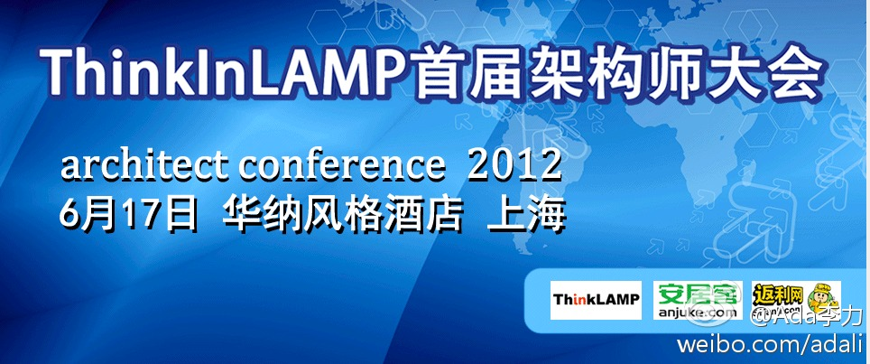
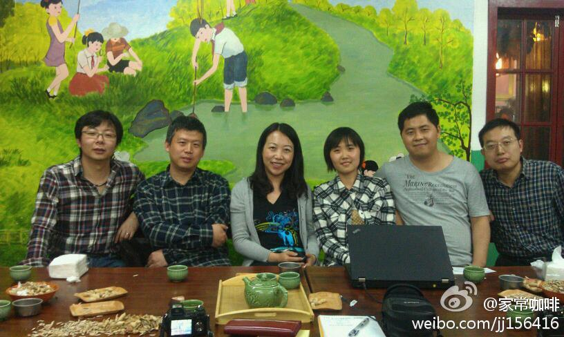

两个社区，OpenParty 和iWeekend在西安合作办活动。//@iam胡凯:求勇猛扩散！！@西安Openparty:国际著名创业助推Iweekend @iW_Beijing 将在4月21日举行创业项目展示会暨首届Iweekend西安活动闭幕式，届时将会有5个优秀的团队展示他们项目成果，欢迎对于创业有兴趣的朋友和媒体伙伴参与；活动免费，报名链接：网页链接 @葡萄城西安 @Ada李力
我不厚道地乐坏了。//@朱翔Maple:每人发一小太阳帽，工会主席举一小旗，用喇叭喊着「18M的同志们，看完了故宫，现在是自由午餐时间，我们一个小时后在这里集合，然后坐地铁去王府井。」---:抱歉，此微博已被作者删除。查看帮助： 网页链接
云平台上开发语言很多，Java是必备选择的开发语言。@新浪云:#SAE java邀请码#再次发放啦~您只需转发一下该围脖，就有机会获得#SAE Java邀请码#1枚，转发截止到今天17：30，我们将从转发者当中选出10名童鞋，获得邀请码哦~SAE Java开发手册：网页链接
摆摊有什么不好？我就觉得自己少时缺摆摊的经验，现在还想整一拨儿孩子练练摆摊呢。//@老软件工程师: //@木方子见: 我见过博士摆摊的呢！---:抱歉，由于作者设置，你暂时没有这条微博的查看权限哦。查看帮助： 网页链接
ThinkInLAMP架构师大会火热报名中 ThinkInLAMP首届架构师大会将于6月17日在上海华纳风格酒店举行，转发或分享可享报名九折优惠 @thinkinlamp 网页链接 @三马 @板子 @锅巴GG不唠嗑 
大家都很能聊嘛，聊了五个小时。而刚见面时，还要互换下名片，之前不少相互还不认识哪 [呵呵] 从左到右 @李佳宸-开发者社区联盟 @家常咖啡 @Ada李力 @ssywtt-EEFOCUS @潘少宁_腾讯_LAMP人 @中间件老王@家常咖啡:几位社区人士饭前合影@Ada李力 @中间件老王 @ssywtt_EEfocus @潘少宁 
今天@李佳宸-开发者社区联盟 谈起他的经验，在技术宅男云集的技术社区里，运营人员和编辑人员最好是女性，漂亮小女生，文艺女青更好。今天与会的@ssywtt-EEFOCUS 是与非网的社区运营经理，恰好又验证了这一点。
去年#QCon#赞助商盛大请了穿紧身衣，露大腿的模特儿在会场上四处游走，说老实话，我不喜欢。前段时间各大IT公司推出度娘类的招牌，说老实话，我也不喜欢。微博上热捧苍井空，把苍妹妹拔到精神境界超高一类，说老实话，我也不喜欢。但，喜不喜欢关你屁事, 只有低俗化的娱乐才能吸引眼球。@LukeFan
我不反感苍妹妹，只是讨厌把她捧成德艺双馨。但政府对其的全面打压，更让人讨厌。//@俞宙_YZ：苍老师字写得好，不能算低俗吧？ //@俞宙_YZ:苍老师字写得好，不能算低俗吧？@Ada李力:去年#QCon#赞助商盛大请了穿紧身衣，露大腿的模特儿在会场上四处游走，说老实话，我不喜欢。前段时间各大IT公司推出度娘类的招牌，说老实话，我也不喜欢。微博上热捧苍井空，把苍妹妹拔到精神境界超高一类，说老实话，我也不喜欢。但，喜不喜欢关你屁事, 只有低俗化的娱乐才能吸引眼球。@LukeFan
 //@iam胡凯:求勇猛扩散！！
//@iam胡凯:求勇猛扩散！！ 网页链接 @葡萄城西安 @Ada李力
网页链接 @葡萄城西安 @Ada李力